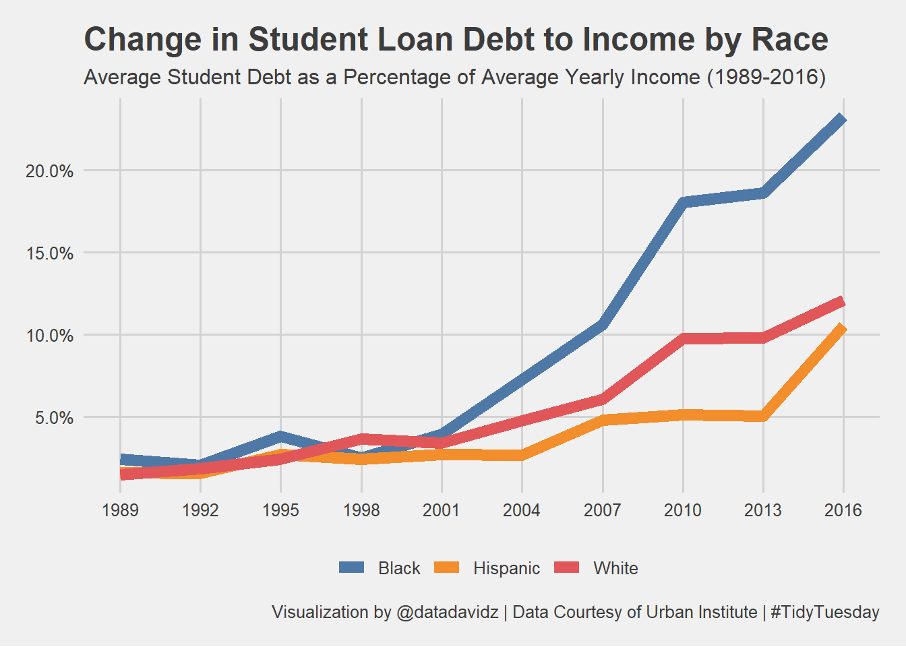

TidyTuesday: Student Loan Debt and Income by Race Dataset
Posted on February 2, 2021
A quick analysis of the weekly #TidyTuesday dataset organized by the R4DS Online Learning Community. My approach is to apply my data science skills to explore one question I have about the data and generate a visualization that addresses this question. The main purpose for me is to practice and try out new things. I am never completely satisfied with the end result but I do the best I can in a short period of time.
What I learned this week about R and the Tidyverse
- Regex expression to select everything after the first space
- [.^ ]* is regex expression for any character, any number of times but not space and do not capture
- Setting custom axis breaks using scale_x_continuous and seq functions
Brief explanation of the dataset
The dataset contains income and student debt information from 1989-2016. A lot of data was released however my focus was on average yearly income and average student loan debt broken down by race. My question was: “How did average student loan debt-to-income change over time by race?”. The income data had many different categories for race but student debt had just three.
Wrangle
Initial conclusions from exploring the dataset:
- Student loan debt information was only available for three races: White, Black and Hispanic.
- Student loan debt was available only every 3rd year.
- Income distribution contained many different race categories that don’t align precisely with the student loan data.
race_of_interest <- c("White Alone", "Black Alone", "Hispanic (Any Race)")
race_income_year <- income_distribution %>%
select(year, race, number, income_mean) %>%
distinct() %>%
filter(race %in% race_of_interest) %>%
mutate(race = str_replace(race, "[.^ ]* (.*)", ""))
race_debt_income <- student_debt %>%
left_join(race_income_year, by = c("year", "race")) %>%
mutate(debt_to_income = loan_debt / income_mean)
Testing for regular expression to capture everything after first space including the space.
test_string <- "Hispanic (Any Race)"
str_replace(test_string, "[.^ ]* (.*)", "")
## [1] "Hispanic"
Visualize
Initial visualization of mean income over time by race
race_income_year %>%
ggplot(aes(x = year, y = income_mean, color = race)) +
geom_line()

Visualization to address the question of interest.
race_debt_income %>%
ggplot(aes(x = year, y = debt_to_income, color = race)) +
geom_line(size = 3) +
scale_x_continuous(breaks = seq(1989, 2016, 3)) +
scale_y_continuous(labels = scales::percent_format()) +
ggthemes::scale_color_tableau(name=NULL) +
labs(title = "Change in Student Loan Debt to Income by Race",
subtitle = "Average Student Debt as a Percentage of Average Yearly Income (1989-2016)",
caption = "Visualization by @datadavidz | Data Courtesy of Urban Institute | #TidyTuesday") +
ggthemes::theme_fivethirtyeight()

Summary
The ratio of student loan debt to average yearly income is increasing across all three racial groups contained in the dataset. The increase is most significant for blacks. Grid lines were added every 3 years to correspond with the data. A clean and simple data visualization using a line chart.
LS0tDQpvdXRwdXQ6IA0KICBodG1sX2RvY3VtZW50Og0KICAgIGNvZGVfZG93bmxvYWQ6IHRydWUNCiAgICBpbmNsdWRlczoNCiAgICAgIGFmdGVyX2JvZHk6IGZvb3Rlci5odG1sDQotLS0NCjxicj4NCmBgYHtyIHNldHVwLCBpbmNsdWRlPUZBTFNFfQ0Ka25pdHI6Om9wdHNfY2h1bmskc2V0KGVjaG8gPSBUUlVFKQ0KYGBgDQoNCiMjICoqVGlkeVR1ZXNkYXk6IFN0dWRlbnQgTG9hbiBEZWJ0IGFuZCBJbmNvbWUgYnkgUmFjZSBEYXRhc2V0KioNCipQb3N0ZWQgb24gRmVicnVhcnkgMiwgMjAyMSoNCg0KQSBxdWljayBhbmFseXNpcyBvZiB0aGUgd2Vla2x5IFsjVGlkeVR1ZXNkYXldKGh0dHA6Ly9naXRodWIuY29tL3Jmb3JkYXRhc2NpZW5jZS90aWR5dHVlc2RheSkgZGF0YXNldCBvcmdhbml6ZWQgYnkgdGhlIFI0RFMgT25saW5lIExlYXJuaW5nIENvbW11bml0eS4gIE15IGFwcHJvYWNoIGlzIHRvIGFwcGx5IG15IGRhdGEgc2NpZW5jZSBza2lsbHMgdG8gZXhwbG9yZSBvbmUgcXVlc3Rpb24gSSBoYXZlIGFib3V0IHRoZSBkYXRhIGFuZCBnZW5lcmF0ZSBhIHZpc3VhbGl6YXRpb24gdGhhdCBhZGRyZXNzZXMgdGhpcyBxdWVzdGlvbi4gIFRoZSBtYWluIHB1cnBvc2UgZm9yIG1lIGlzIHRvIHByYWN0aWNlIGFuZCB0cnkgb3V0IG5ldyB0aGluZ3MuICBJIGFtIG5ldmVyIGNvbXBsZXRlbHkgc2F0aXNmaWVkIHdpdGggdGhlIGVuZCByZXN1bHQgYnV0IEkgZG8gdGhlIGJlc3QgSSBjYW4gaW4gYSBzaG9ydCBwZXJpb2Qgb2YgdGltZS4NCg0KYGBge3IsIGluY2x1ZGU9RkFMU0V9DQoNCmxpYnJhcnkodGlkeXZlcnNlKQ0KDQp0aGVtZV9zZXQodGhlbWVfbGlnaHQoKSkNCg0KYGBgDQoNCioqV2hhdCBJIGxlYXJuZWQgdGhpcyB3ZWVrIGFib3V0IFIgYW5kIHRoZSBUaWR5dmVyc2UqKg0KDQoqIFJlZ2V4IGV4cHJlc3Npb24gdG8gc2VsZWN0IGV2ZXJ5dGhpbmcgYWZ0ZXIgdGhlIGZpcnN0IHNwYWNlDQoqIFsuXiBdKiBpcyByZWdleCBleHByZXNzaW9uIGZvciBhbnkgY2hhcmFjdGVyLCBhbnkgbnVtYmVyIG9mIHRpbWVzIGJ1dCBub3Qgc3BhY2UgYW5kIGRvIG5vdCBjYXB0dXJlDQoqIFNldHRpbmcgY3VzdG9tIGF4aXMgYnJlYWtzIHVzaW5nIHNjYWxlX3hfY29udGludW91cyBhbmQgc2VxIGZ1bmN0aW9ucw0KDQoqKkJyaWVmIGV4cGxhbmF0aW9uIG9mIHRoZSBkYXRhc2V0KioNCg0KVGhlIGRhdGFzZXQgY29udGFpbnMgaW5jb21lIGFuZCBzdHVkZW50IGRlYnQgaW5mb3JtYXRpb24gZnJvbSAxOTg5LTIwMTYuICBBIGxvdCBvZiBkYXRhIHdhcyByZWxlYXNlZCBob3dldmVyIG15IGZvY3VzIHdhcyBvbiBhdmVyYWdlIHllYXJseSBpbmNvbWUgYW5kIGF2ZXJhZ2Ugc3R1ZGVudCBsb2FuIGRlYnQgYnJva2VuIGRvd24gYnkgcmFjZS4gIE15IHF1ZXN0aW9uIHdhczogIkhvdyBkaWQgYXZlcmFnZSBzdHVkZW50IGxvYW4gZGVidC10by1pbmNvbWUgY2hhbmdlIG92ZXIgdGltZSBieSByYWNlPyIuICBUaGUgaW5jb21lIGRhdGEgaGFkIG1hbnkgZGlmZmVyZW50IGNhdGVnb3JpZXMgZm9yIHJhY2UgYnV0IHN0dWRlbnQgZGVidCBoYWQganVzdCB0aHJlZS4NCg0KYGBge3IgTG9hZCwgaW5jbHVkZSA9IEZBTFNFfQ0KI1NhdmUgbmVlZGVkIGRhdGEgaW50byBSZGF0YSBmb3IgYmxvZyBwb3N0DQpsb2FkKCIuL2RhdGEvdHRfMjEwMjA5LlJkYXRhIikNCmBgYA0KDQojIyMgV3JhbmdsZQ0KDQpJbml0aWFsIGNvbmNsdXNpb25zIGZyb20gZXhwbG9yaW5nIHRoZSBkYXRhc2V0Og0KDQoqIFN0dWRlbnQgbG9hbiBkZWJ0IGluZm9ybWF0aW9uIHdhcyBvbmx5IGF2YWlsYWJsZSBmb3IgdGhyZWUgcmFjZXM6IFdoaXRlLCBCbGFjayBhbmQgSGlzcGFuaWMuDQoqIFN0dWRlbnQgbG9hbiBkZWJ0IHdhcyBhdmFpbGFibGUgb25seSBldmVyeSAzcmQgeWVhci4NCiogSW5jb21lIGRpc3RyaWJ1dGlvbiBjb250YWluZWQgbWFueSBkaWZmZXJlbnQgcmFjZSBjYXRlZ29yaWVzIHRoYXQgZG9uJ3QgYWxpZ24gcHJlY2lzZWx5IHdpdGggdGhlIHN0dWRlbnQgbG9hbiBkYXRhLg0KDQpgYGB7ciBXcmFuZ2xlfQ0KcmFjZV9vZl9pbnRlcmVzdCA8LSBjKCJXaGl0ZSBBbG9uZSIsICJCbGFjayBBbG9uZSIsICJIaXNwYW5pYyAoQW55IFJhY2UpIikNCnJhY2VfaW5jb21lX3llYXIgPC0gaW5jb21lX2Rpc3RyaWJ1dGlvbiAlPiUNCiAgc2VsZWN0KHllYXIsIHJhY2UsIG51bWJlciwgaW5jb21lX21lYW4pICU+JQ0KICBkaXN0aW5jdCgpICU+JQ0KICBmaWx0ZXIocmFjZSAlaW4lIHJhY2Vfb2ZfaW50ZXJlc3QpICU+JQ0KICBtdXRhdGUocmFjZSA9IHN0cl9yZXBsYWNlKHJhY2UsICJbLl4gXSogKC4qKSIsICIiKSkNCg0KcmFjZV9kZWJ0X2luY29tZSA8LSBzdHVkZW50X2RlYnQgJT4lDQogIGxlZnRfam9pbihyYWNlX2luY29tZV95ZWFyLCBieSA9IGMoInllYXIiLCAicmFjZSIpKSAlPiUNCiAgbXV0YXRlKGRlYnRfdG9faW5jb21lID0gbG9hbl9kZWJ0IC8gaW5jb21lX21lYW4pDQpgYGANCg0KVGVzdGluZyBmb3IgcmVndWxhciBleHByZXNzaW9uIHRvIGNhcHR1cmUgZXZlcnl0aGluZyBhZnRlciBmaXJzdCBzcGFjZSBpbmNsdWRpbmcgdGhlIHNwYWNlLg0KYGBge3J9DQp0ZXN0X3N0cmluZyA8LSAiSGlzcGFuaWMgKEFueSBSYWNlKSINCnN0cl9yZXBsYWNlKHRlc3Rfc3RyaW5nLCAiWy5eIF0qICguKikiLCAiIikNCmBgYA0KDQojIyMgVmlzdWFsaXplDQoNCkluaXRpYWwgdmlzdWFsaXphdGlvbiBvZiBtZWFuIGluY29tZSBvdmVyIHRpbWUgYnkgcmFjZQ0KYGBge3IgVmlzdWFsaXplfQ0KcmFjZV9pbmNvbWVfeWVhciAlPiUNCiAgZ2dwbG90KGFlcyh4ID0geWVhciwgeSA9IGluY29tZV9tZWFuLCBjb2xvciA9IHJhY2UpKSArDQogIGdlb21fbGluZSgpDQpgYGANCg0KVmlzdWFsaXphdGlvbiB0byBhZGRyZXNzIHRoZSBxdWVzdGlvbiBvZiBpbnRlcmVzdC4NCmBgYHtyfQ0KcmFjZV9kZWJ0X2luY29tZSAlPiUNCiAgZ2dwbG90KGFlcyh4ID0geWVhciwgeSA9IGRlYnRfdG9faW5jb21lLCBjb2xvciA9IHJhY2UpKSArDQogIGdlb21fbGluZShzaXplID0gMykgKw0KICBzY2FsZV94X2NvbnRpbnVvdXMoYnJlYWtzID0gc2VxKDE5ODksIDIwMTYsIDMpKSArDQogIHNjYWxlX3lfY29udGludW91cyhsYWJlbHMgPSBzY2FsZXM6OnBlcmNlbnRfZm9ybWF0KCkpICsNCiAgZ2d0aGVtZXM6OnNjYWxlX2NvbG9yX3RhYmxlYXUobmFtZT1OVUxMKSArDQogIGxhYnModGl0bGUgPSAiQ2hhbmdlIGluIFN0dWRlbnQgTG9hbiBEZWJ0IHRvIEluY29tZSBieSBSYWNlIiwNCiAgICAgICBzdWJ0aXRsZSA9ICJBdmVyYWdlIFN0dWRlbnQgRGVidCBhcyBhIFBlcmNlbnRhZ2Ugb2YgQXZlcmFnZSBZZWFybHkgSW5jb21lICgxOTg5LTIwMTYpIiwNCiAgICAgICBjYXB0aW9uID0gIlZpc3VhbGl6YXRpb24gYnkgQGRhdGFkYXZpZHogfCBEYXRhIENvdXJ0ZXN5IG9mIFVyYmFuIEluc3RpdHV0ZSB8ICNUaWR5VHVlc2RheSIpICsNCiAgZ2d0aGVtZXM6OnRoZW1lX2ZpdmV0aGlydHllaWdodCgpDQpgYGANCg0KIyMjIFN1bW1hcnkNCg0KVGhlIHJhdGlvIG9mIHN0dWRlbnQgbG9hbiBkZWJ0IHRvIGF2ZXJhZ2UgeWVhcmx5IGluY29tZSBpcyBpbmNyZWFzaW5nIGFjcm9zcyBhbGwgdGhyZWUgcmFjaWFsIGdyb3VwcyBjb250YWluZWQgaW4gdGhlIGRhdGFzZXQuICBUaGUgaW5jcmVhc2UgaXMgbW9zdCBzaWduaWZpY2FudCBmb3IgYmxhY2tzLiAgR3JpZCBsaW5lcyB3ZXJlIGFkZGVkIGV2ZXJ5IDMgeWVhcnMgdG8gY29ycmVzcG9uZCB3aXRoIHRoZSBkYXRhLiAgQSBjbGVhbiBhbmQgc2ltcGxlIGRhdGEgdmlzdWFsaXphdGlvbiB1c2luZyBhIGxpbmUgY2hhcnQu